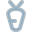

1. archive-content-sub32
Repaired · geometry checks passOriginal sourceBefore Repaired
Repaired Centerline · 32×32
Centerline · 32×32 32px · light32px · dark Closed document frame and all three horizontal content lines. Small-size treatment: Reduced three content lines to two. Reduced three content lines to two.
Source parts and checks
Document frame and three lines of different lengths.
[]
Source UUID: 50e8e4be-2921-498a-b6bc-31b5b6442b6e
Previous Python file preserved. Linked new profile: archive-content-sub32-v2
baby-head-sub32-v2
Corrected · checks passOriginal sourcePrevious drawingCurrent · 32×32 Centerline
Centerline Native 32×32Dark Restored a large baby face, circular jaw, curl, eyes and smile. Removed the rejected tiny-head-and-wrap repair.
Review details
Restored a large baby face, circular jaw, curl, eyes and smile. Removed the rejected tiny-head-and-wrap repair. Source: 454b702c-a035-5fa0-a3ec-ac065587fca8. Previous model preserved.
3. barcode-shopping-sub32
Repaired · geometry checks passOriginal source Before
Before RepairedCenterline · 32×32
RepairedCenterline · 32×32 32px · light32px · dark
Rounded enclosing square with all 4 vertical barcode bars. Small-size treatment: Reduced the barcode to three bars and opened the enclosure into four scan corners. Reduced the barcode to three bars and opened the enclosure into four scan corners.
Source parts and checks
Rounded square frame and FOUR vertical barcode bars.
[]
Source UUID: 489f79de-538e-42b6-b17b-4132665a5a1b
Previous Python file preserved. Linked new profile: barcode-shopping-sub32-v2
4. battery-charging-vertical-sub32
Repaired · geometry checks passOriginal source Before
Before RepairedCenterline · 32×32
RepairedCenterline · 32×32 32px · light32px · dark
Upright battery with raised terminal and a clear internal lightning bolt. Opened the lower shell around the bolt and merged the terminal divider into the outline.
Source parts and checks
Battery outline, terminal and three-segment lightning bolt.
[]
Source UUID: 4eb92da5-29c0-4d92-ae40-851bdeae1749
Previous Python file preserved. Linked new profile: battery-charging-vertical-sub32-v3
5. bicycle-reference-25-sub32
Repaired · geometry checks passOriginal source Before
Before Repaired
Repaired Centerline · 32×32
Centerline · 32×32 32px · light32px · dark Bicycle with two open tyres, raised saddle, handlebar and connecting frame. Removed internal spokes and the small pedal triangle; retained two wheels, saddle, handlebar and frame.
Source parts and checks
Two open circular wheels, triangular frame, saddle, fork and handlebar.
[]
Source UUID: ba2c7c5d-7b19-4251-8651-f1619fdbdc5e
Previous Python file preserved. Linked new profile: bicycle-reference-25-sub32-v2
6. bound-notebook-sub32
Repaired · geometry checks passOriginal source Before
Before Repaired
Repaired Centerline · 32×32
Centerline · 32×32 32px · light32px · dark Rounded bound notebook, vertical binding and all three binding marks. Small-size treatment: Reduced three binding marks to two. Reduced three binding marks to two.
Source parts and checks
Notebook outline, vertical binding and three binding marks.
[]
Source UUID: 16275d53-14c4-4703-9919-0a8c59efc967
Previous Python file preserved. Linked new profile: bound-notebook-sub32-v2
7. calculator-wide-display-four-keys-sub32
Repaired · geometry checks passOriginal source Before
Before Repaired
Repaired Centerline · 32×32
Centerline · 32×32 32px · light32px · dark Calculator frame, separate closed display and four horizontal keys in two rows. Small-size treatment: Simplified the display to a horizontal indicator and retained all four keys as round marks. Simplified the display to a horizontal indicator and retained all four keys as round marks.
Source parts and checks
Calculator body, CLOSED rectangular display and FOUR keys.
[]
Source UUID: 824b90e9-b86e-4354-b20c-7de8579c1c3b
Previous Python file preserved. Linked new profile: calculator-wide-display-four-keys-sub32-v2
8. carrot-with-two-pointed-leaves-profile32
Repaired · geometry checks passOriginal sourceBeforeRepairedCenterline · 32×32
32px · light32px · dark
Tapered carrot with two upright leaf strokes and one short texture mark. Rendered the two leaves as upright strokes and reduced two texture marks to one.
Source parts and checks
Carrot with two upright pointed leaves and two short carrot texture marks.
[]
Source UUID: 6175b21e-96a2-4503-a4cc-6b0bc36376c0
Previous Python file preserved. Linked new profile: carrot-with-two-pointed-leaves-profile32-v2
9. charging-battery-104-sub32
Repaired · geometry checks passOriginal sourceBefore Repaired
Repaired Centerline · 32×32
Centerline · 32×32 32px · light32px · dark Side-terminal battery with a clear lightning mark. Opened the shell around the bolt and merged the terminal divider; retained the side-terminal orientation.
Source parts and checks
Closed battery frame, closed terminal and interior lightning zigzag.
[]
Source UUID: f8b6ea0a-273a-4932-a93b-52454f7fd328
Previous Python file preserved. Linked new profile: charging-battery-104-sub32-v2
10. checklist-document-for-tasks-solo-profile32
Repaired · geometry checks passOriginal source BeforeRepaired
BeforeRepaired Centerline · 32×32
Centerline · 32×32 32px · light32px · dark Checklist document with two separate square checkboxes and two horizontal content lines. Small-size treatment: Replaced small empty checkbox outlines with readable check strokes; kept two rows and their text marks. Replaced small empty checkbox outlines with readable check strokes; kept two rows and their text marks.
Source parts and checks
Checklist document frame enclosing two square check boxes and two text lines.
[]
Source UUID: 3b7aa072-22e2-420b-a990-9a6447b66ea3
Previous Python file preserved. Linked new profile: checklist-document-for-tasks-solo-profile32-v2
11. chicken-face-sub32
Repaired · geometry checks passOriginal source Before
Before RepairedCenterline · 32×32
RepairedCenterline · 32×32 32px · light32px · dark
Open chicken head, closed arched comb, two eye dots and a closed diamond beak. Small-size treatment: Merged the comb into the outer head outline, removing only the tiny dividing line; kept both eyes and the closed diamond beak. Merged the comb into the outer head outline, removing only the tiny dividing line; kept both eyes and the closed diamond beak.
Source parts and checks
Open chicken head, attached teardrop comb, two eyes and closed diamond beak.
[]
Source UUID: 7443f092-4834-4d07-9b5b-1b7914777905
Previous Python file preserved. Linked new profile: chicken-face-sub32-v4
12. circle-skip-forward-button-solo-profile32
Repaired · geometry checks passOriginal source Before
Before Repaired
Repaired Centerline · 32×32
Centerline · 32×32 32px · light32px · dark Circular frame, separate closed right-pointing triangle and vertical stop bar. Small-size treatment: Removed the circular enclosure; retained the closed play triangle and separate stop bar. Removed the circular enclosure; retained the closed play triangle and separate stop bar.
Source parts and checks
Circular border, closed right-pointing triangle and separate vertical stop bar.
[]
Source UUID: 7de072ea-141a-4a2a-9bfe-5d555c9500af
Previous Python file preserved. Linked new profile: circle-skip-forward-button-solo-profile32-v2
13. circles-three-trefoil-sub32
Repaired · geometry checks passOriginal sourceBefore Repaired
Repaired Centerline · 32×32
Centerline · 32×32 32px · light32px · dark Three equal open circles in a triangular cluster. Separated the tangent circles to preserve three equal, clear rings on the integer grid.
Source parts and checks
Three equal tangent outline circles: one above two aligned below.
[]
Source UUID: 35f09f7d-689b-4b3c-944a-4e852904bb48
Previous Python file preserved. Linked new profile: circles-three-trefoil-sub32-v2
14. circular-question-mark-symbol-solo-profile32
Repaired · geometry checks passOriginal source Before
Before RepairedCenterline · 22×32
RepairedCenterline · 22×32 32px · light32px · dark
Shared question mark at natural proportions. Removed the surrounding circle; retained the complete shared question character.
Source parts and checks
Circular border and question-mark hook with separate dot.
[]
Source UUID: c356687a-8779-4296-879a-5477d3e84e2f
Previous Python file preserved. Linked new profile: circular-question-mark-symbol-solo-profile32-v2
15. coins-sub32
Repaired · geometry checks passOriginal source BeforeRepaired
BeforeRepaired Centerline · 32×32
Centerline · 32×32 32px · light32px · dark Two concentric coin outlines. Removed the tiny central stamp stroke, retaining the double-ring coin.
Source parts and checks
Two complete concentric circular coin outlines and one central vertical stroke.
[]
Source UUID: 5cabb173-08d9-478c-9912-5357cbf2ed85
Previous Python file preserved. Linked new profile: coins-sub32-v3
16. delivery-worker-head-with-emblem-cap-sub32
Repaired · geometry checks passOriginal sourceBeforeRepairedCenterline · 32×32
32px · light32px · dark
Delivery-worker cap with emblem, two eyes and open curved cheeks. Rendered the small cap emblem as a dot and flattened the brim; retained both eyes and cheeks.
Source parts and checks
Delivery-worker cap, central circular emblem, curved brim, TWO eye dots and two open cheek curves.
[]
Source UUID: 6ea95ced-c71d-4484-9b5f-f271f95f35dc
Previous Python file preserved. Linked new profile: delivery-worker-head-with-emblem-cap-sub32-v2
financial-dollar-sign-document-solo-profile32-v4
Source compared · all parts retained · checks pass · 32×40 · stroke 4
Original artwork Remade from original
Remade from original Centerline
Centerline
Actual sizeDark background Dollar document: rounded clipped-corner page, original open dollar on the left and both right-hand text lines restored.
Preserved: portrait page; rounded corners; clipped upper-right corner; dollar on left; two right-hand text lines.
Previous repair · superseded
Rejected repair
18. fork-and-knife-dining-symbol-solo-profile32
Repaired · geometry checks passOriginal sourceBeforeRepaired Centerline · 32×32
Centerline · 32×32 32px · light32px · dark Fork with two clear tines beside a closed curved knife blade. Removed the enclosing circle and reduced the fork to two tines while retaining its bowl, handle and the knife blade.
Source parts and checks
Enclosing circle, three-tine fork with curved bowl and long handle, and a separate closed knife blade with handle.
[]
Source UUID: 96fa9fe4-386f-4d65-8531-a569bd794200
Previous Python file preserved. Linked new profile: fork-and-knife-dining-symbol-solo-profile32-v2
19. fork-and-knife-sub32
Repaired · geometry checks passOriginal sourceBefore Repaired
Repaired Centerline · 32×32
Centerline · 32×32 32px · light32px · dark Fork with two clear tines beside a closed curved knife blade. reduced the fork to two tines while retaining its bowl, handle and the knife blade.
Source parts and checks
Three fork prongs, curved fork bowl and stem; separate curved knife blade and handle.
[]
Source UUID: b66fd641-5f5f-41b7-acfe-644485d3c82d
Previous Python file preserved. Linked new profile: fork-and-knife-sub32-v2
20. fork-spoon-crossed-sub32
Repaired · geometry checks passOriginal source Before
Before RepairedCenterline · 32×32
RepairedCenterline · 32×32 32px · light32px · dark
Crossed two-tine fork and round spoon with clear handles. Reduced the fork to two tines and made the spoon bowl circular; retained crossed handles and an open spoon interior.
Source parts and checks
Crossed spoon and three-pronged fork, curved fork bowl, oval spoon bowl and both handles.
[]
Source UUID: 6305d089-5f4e-4d0d-8488-b6bf8ef99e4d
Previous Python file preserved. Linked new profile: fork-spoon-crossed-sub32-v2
21. geometric-shapes-in-rounded-square-batch-006-02-sub32
Repaired · geometry checks passOriginal source Before
Before RepairedCenterline · 32×32
RepairedCenterline · 32×32 32px · light32px · dark
Separate circle, square and triangle. Removed the outer enclosure; retained all three separate shapes.
Source parts and checks
Rounded square frame containing a separate small square, circle and upright triangle.
[]
Source UUID: 610733a3-dfd5-42df-9651-d396d039493b
Previous Python file preserved. Linked new profile: geometric-shapes-in-rounded-square-batch-006-02-sub32-v2
22. graduate-person-sub32
Repaired · geometry checks passOriginal source Before
Before Repaired
Repaired Centerline · 32×32
Centerline · 32×32 32px · light32px · dark Graduate mortarboard above a circular jaw and open shoulder bust. Merged the cap front and band into the head outline and opened the shoulder base; preserved the mortarboard silhouette and circular jaw.
Source parts and checks
Graduate bust with mortarboard diamond, cap band, circular jaw and closed rounded shoulders.
[]
Source UUID: 0dc48bc0-54c9-4886-96f6-e51b9d1f618c
Previous Python file preserved. Linked new profile: graduate-person-sub32-v2
23. hand-pointing-at-3d-cube-sub32
Repaired · geometry checks passOriginal sourceBefore RepairedCenterline · 32×32
RepairedCenterline · 32×32 32px · light32px · dark
Perspective cube above a small upward-pointing hand. Reduced the small hand to an index stroke, palm and thumb, retaining the complete perspective cube.
Source parts and checks
Open-edged perspective cube and separate upward pointing hand with open wrist.
[]
Source UUID: ec7d49e5-85a7-4bad-943c-fff9ce408048
Previous Python file preserved. Linked new profile: hand-pointing-at-3d-cube-sub32-v2
24. hierarchy-two-square-nodes-sub32
Repaired · geometry checks passOriginal source Before
Before RepairedCenterline · 32×32
RepairedCenterline · 32×32 32px · light32px · dark
Square root node, connected branching stem and two square child nodes. Small-size treatment: Simplified the stepped branch routing to two direct links, retaining all three square nodes. Simplified the stepped branch routing to two direct links, retaining all three square nodes.
Source parts and checks
One square root node, horizontal branch and two square leaf nodes.
[]
Source UUID: bd04715e-144d-4c6c-84e7-b3504ca80063
Previous Python file preserved. Linked new profile: hierarchy-two-square-nodes-sub32-v2
25. horizontal-measurement-markers-solo-profile32
Repaired · geometry checks passOriginal source Before
Before Repaired
Repaired Centerline · 32×32
Centerline · 32×32 32px · light32px · dark Two rounded measurement jaws, separate middle guide and lower-right extension. Removed the tiny end tick; retained both jaws, middle guide and the vertical extension.
Source parts and checks
Two rounded measurement jaws, separate middle guide, lower-right vertical extension, and short horizontal end tick above its foot.
[]
Source UUID: 5e331499-062d-4a4a-965e-e100d55ce756
Previous Python file preserved. Linked new profile: horizontal-measurement-markers-solo-profile32-v3
26. link-interlocking-sub32
Repaired · geometry checks passOriginal source Before
Before Repaired
Repaired Centerline · 32×32
Centerline · 32×32 32px · light32px · dark Two diagonal open chain links and a short connecting stroke. Simplified the inward-bent tips into two clear open links and a central joining stroke.
Source parts and checks
Two interlocking rounded links with bent inner ends and two separate openings.
[]
Source UUID: a1310a44-a79e-47db-836c-4e40111ae679
Previous Python file preserved. Linked new profile: link-interlocking-sub32-v2
27. measurement-marker-draft-batch-024-15-sub32
Repaired · geometry checks passOriginal source Before
Before Repaired
Repaired Centerline · 32×32
Centerline · 32×32 32px · light32px · dark Two rounded measurement jaws, separate middle guide and lower-right extension. Removed the tiny end tick; retained both jaws, middle guide and the vertical extension.
Source parts and checks
Two rounded measurement jaws, separate middle guide, lower-right vertical extension, and short horizontal end tick above its foot.
[]
Source UUID: 5e331499-062d-4a4a-965e-e100d55ce756
Previous Python file preserved. Linked new profile: measurement-marker-draft-batch-024-15-sub32-v4
28. mechanical-robotic-hand-sub32
Repaired · geometry checks passOriginal source Before
Before RepairedCenterline · 32×32
RepairedCenterline · 32×32 32px · light32px · dark
Open-wrist robotic hand with raised finger and a single joint seam. Reduced the wrist and finger seams to one clear joint mark; retained the open wrist and pointing hand silhouette.
Source parts and checks
Robotic hand with open wrist, curved wrist seam, upper finger joint and slanted lower finger joint.
[]
Source UUID: 6444a5ca-ed45-4973-a423-c42fca7fd778
Previous Python file preserved. Linked new profile: mechanical-robotic-hand-sub32-v2
mobile-contactless-payment-solo-profile32
Corrected · checks passOriginal source Previous drawing
Previous drawing Current · 32×48Centerline
Current · 32×48Centerline Native 32×48Dark
User-approved 32×48 side exception. Shared dollar glyph, 4px stroke, one wireless arc; frame openings give the currency stem room.
Review details
User-approved 32×48 side exception. Shared dollar glyph, 4px stroke, one wireless arc; frame openings give the currency stem room. Source: 8d317b81-2d88-4d5c-9090-0c063df565b3. Previous model preserved.
30. mobile-phone-control-play-sub32
Repaired · geometry checks passOriginal source Before
Before Repaired
Repaired Centerline · 32×32
Centerline · 32×32 32px · light32px · dark Closed phone frame, separate closed play triangle and footer divider. Small-size treatment: Removed the footer divider to give the closed play triangle a clear opening. Removed the footer divider to give the closed play triangle a clear opening.
Source parts and checks
Closed rounded phone frame, separate closed play triangle and footer divider.
[]
Source UUID: d0012287-f904-4bd1-be94-369aca27d22a
Previous Python file preserved. Linked new profile: mobile-phone-control-play-sub32-v2
money-bag-sub32
Corrected · checks passOriginal source Previous drawing
Previous drawing Current · 32×32
Current · 32×32 Centerline
Centerline
Native 32×32Dark Kept the bag. Simplified the dollar to an open S curve with short top/bottom ticks; no heavy bar through the middle.
Review details
Kept the bag. Simplified the dollar to an open S curve with short top/bottom ticks; no heavy bar through the middle. Source: 6e31cce6-f749-4014-8bc4-bf1b7d5d439c. Previous model preserved.
money-chat-bubble-solo-profile32-v4
Source compared · all parts retained · checks pass · 32×42 · stroke 4
Original artwork Remade from original
Remade from original Centerline
Centerline Actual sizeDark background Rounded money speech bubble with the original long lower-left tail and open S-shaped dollar with short currency ticks.
Preserved: rounded bubble; lower-left tail; S curve; upper and lower dollar ticks.
Previous repair · superseded
Rejected repair
monitor-with-dollar-symbol-solo-profile32-v4
Source compared · all parts retained · checks pass · 32×40 · stroke 4
Original artwork Remade from original
Remade from original Centerline
Centerline
Actual sizeDark background Monitor: rounded screen, centered open dollar, attached vertical stem and full horizontal foot restored.
Preserved: rounded screen; centered dollar; vertical stand; horizontal foot.
Previous repair · superseded
Rejected repair34. news-article-page-solo-profile32
Repaired · geometry checks passOriginal source Before
Before RepairedCenterline · 32×32
RepairedCenterline · 32×32 32px · light32px · dark
Clipped-corner page with closed picture panel and both horizontal text lines. Small-size treatment: Combined the picture area into a page header and reduced the body text to one line. Combined the picture area into a page header and reduced the body text to one line.
Source parts and checks
Rounded clipped-corner page, closed rectangular image panel and TWO text lines.
[]
Source UUID: d2ec8c43-9e6d-4059-8823-4ce004c7a076
Previous Python file preserved. Linked new profile: news-article-page-solo-profile32-v2
35. open-palm-hand-14e0f209-1f73-4be1-9637-df2de37b666b-sub32
Repaired · geometry checks passOriginal source Before
Before RepairedCenterline · 32×32
RepairedCenterline · 32×32 32px · light32px · dark
Open-palm hand gesture with four raised finger strokes and a separate thumb branch. Rendered the four fingers as single gesture strokes rather than narrow doubled outlines; retained all four fingers and the thumb.
Source parts and checks
Open palm with thumb and four raised rounded fingers.
[]
Source UUID: 14e0f209-1f73-4be1-9637-df2de37b666b
Previous Python file preserved. Linked new profile: open-palm-hand-14e0f209-1f73-4be1-9637-df2de37b666b-sub32-v2
36. person-with-center-parted-hair-sub32
Repaired · geometry checks passOriginal source Before
Before Repaired
Repaired Centerline · 32×32
Centerline · 32×32 32px · light32px · dark Portrait with a center-parted hair silhouette, circular jaw and open shoulders. Moved the center part into the hair silhouette, omitted the tiny side hair tips, and opened the shoulder base.
Source parts and checks
Circular human head, center-parted hairline, two outward hair tips, and closed rounded shoulder silhouette.
[]
Source UUID: 194e0c8a-520e-4ab3-9a3e-2d1ab17a737a
Previous Python file preserved. Linked new profile: person-with-center-parted-hair-sub32-v2
37. plus-minus-mathematical-sign-solo-profile32
Repaired · geometry checks passOriginal source Before
Before Repaired
Repaired Centerline · 32×32
Centerline · 32×32 32px · light32px · dark Circular plus and minus sign. Removed the diagonal separator; retained both arithmetic signs and the circle.
Source parts and checks
Circular frame, shared upper-left plus and lower-right minus, with rising slash.
[]
Source UUID: 7adfa015-1e70-4aa5-a35c-0902119d672c
Previous Python file preserved. Linked new profile: plus-minus-mathematical-sign-solo-profile32-v3
38. rainbow-arcs-sub32
Repaired · geometry checks passOriginal source Before
Before Repaired
Repaired Centerline · 32×32
Centerline · 32×32 32px · light32px · dark Three concentric open rainbow semicircles, all retaining open undersides. Small-size treatment: Reduced three rainbow bands to two clear open arcs. Reduced three rainbow bands to two clear open arcs.
Source parts and checks
Three concentric open semicircular rainbow arcs.
[]
Source UUID: ffe2ea11-dc9b-4412-89d9-6f62d969d59c
Previous Python file preserved. Linked new profile: rainbow-arcs-sub32-v2
39. rising-candlestick-chart-batch-023-03-sub32
Repaired · geometry checks passOriginal sourceBefore Repaired
Repaired Centerline · 32×32
Centerline · 32×32 32px · light32px · dark Three ascending closed candlestick bodies, each retaining an upper and lower wick. Small-size treatment: Reduced three candlesticks to two while retaining their ascending placement and all four wicks. Reduced three candlesticks to two while retaining their ascending placement and all four wicks.
Source parts and checks
Three rising rounded candlestick bodies, each with upper and lower wick.
[]
Source UUID: 0baca945-4ec6-4025-95ae-cd2fad5c8bac
Previous Python file preserved. Linked new profile: rising-candlestick-chart-batch-023-03-sub32-v2
40. rocket-arched-cockpit-sub32
Repaired · geometry checks passOriginal source Before
Before RepairedCenterline · 32×32
RepairedCenterline · 32×32 32px · light32px · dark
Pointed rocket body with integrated fins, cockpit mark and exhaust stem. Merged the fin seams into the body outline and simplified the cockpit to a round window mark.
Source parts and checks
Rocket body with pointed curved nose, open arched cockpit, TWO side fins, flat base and central lower stem.
[]
Source UUID: ad6d675e-d8a3-4b65-a826-4422da00e7fa
Previous Python file preserved. Linked new profile: rocket-arched-cockpit-sub32-v2
41. rosette-ribbon-sub32
Repaired · geometry checks passOriginal sourceBefore Repaired
Repaired Centerline · 32×32
Centerline · 32×32 32px · light32px · dark Eight-lobed rosette with a center mark and notched ribbon. Rendered the small central ring as a round mark and made the ribbon notch shallower; retained the scalloped seal.
Source parts and checks
Eight-lobed rosette, circular center hole and one notched ribbon.
[]
Source UUID: 4b8d63df-19f2-40b4-a07b-b9f5c17ba2a9
Previous Python file preserved. Linked new profile: rosette-ribbon-sub32-v2
42. rtf-format-sub32
Repaired · geometry checks passOriginal source Before
Before RepairedCenterline · 32×32
RepairedCenterline · 32×32 32px · light32px · dark
Clipped-corner page enclosing a separate rounded rectangular panel divided into two cells. Small-size treatment: Merged the nested panel into the page frame while retaining its two-cell division. Merged the nested panel into the page frame while retaining its two-cell division.
Source parts and checks
Rounded document with clipped upper-right corner and inner rectangle divided into two cells.
[]
Source UUID: 63768576-e3c2-41a6-925a-10bbe0f0af14
Previous Python file preserved. Linked new profile: rtf-format-sub32-v2
43. seated-electric-scooter-sub32
Repaired · geometry checks pass32px · light 32px · dark
32px · dark Seated scooter with two open wheels, seat, chassis and upright handle. Moved axle connections to the tyre boundaries so both wheel openings stay clear; simplified the chassis curve.
Source parts and checks
Seated electric scooter with two open wheels, seat and stem, low chassis and tall steering handle.
[]
Source UUID: 5812f1f1-7907-4e3b-bee2-99b5ee6eb24b
Previous Python file preserved. Linked new profile: seated-electric-scooter-sub32-v3
shield-star-sub32-v4
Source compared · all parts retained · checks pass · 32×48 · stroke 4
Original artwork Remade from original
Remade from original Centerline
Centerline
Actual sizeDark background Complete closed shield with curved crown, pointed base and one five-point star fully inside.
Preserved: closed shield; curved crown; pointed base; five-point star inside.
Previous repair · superseded
Rejected repair
45. side-text-4fd52187-sub32
Repaired · geometry checks passOriginal source BeforeRepaired
BeforeRepaired Centerline · 53×32
Centerline · 53×32 32px · light32px · dark Zero percent from the existing shared glyphs. Shared zero and percent glyphs; percent counters each shifted outward by one grid unit to clear the slash, without changing their shapes. Natural-width text: square container placement is not applicable; side placement must accommodate its full width.
Source parts and checks
Shared typeface digit-0, symbol-percent; natural proportions, 32-unit ink height and grid-fitted layout.
[]
Source UUID: 4fd52187-1c97-4d8d-8d4a-93db88e7190c
Previous Python file preserved. Linked new profile: side-text-4fd52187-sub32-v3
46. smart-car-wi-fi-connection-solo-profile32
Repaired · geometry checks passOriginal sourceBefore Repaired
Repaired Centerline · 32×32
Centerline · 32×32 32px · light32px · dark Connected car with wireless arc, windshield silhouette and two wheel stems. Reduced two wireless arcs to one and removed the bumper divider; kept both wheel stems.
Source parts and checks
Two Wi-Fi arcs, trapezoidal windshield, rounded bumper and TWO wheel stems.
[]
Source UUID: f59286ba-b86a-4e53-9fe0-93f931efec10
Previous Python file preserved. Linked new profile: smart-car-wi-fi-connection-solo-profile32-v2
47. square-barcode-scanning-icon-solo-profile32
Repaired · geometry checks passOriginal source Before
Before Repaired
Repaired Centerline · 32×32
Centerline · 32×32 32px · light32px · dark Rounded enclosing square with all 5 vertical barcode bars. Small-size treatment: Reduced the barcode to three bars and opened the enclosure into four scan corners. Reduced the barcode to three bars and opened the enclosure into four scan corners.
Source parts and checks
Rounded enclosing square with FIVE vertical barcode strokes of alternating lengths.
[]
Source UUID: 2d49d0f6-d1d8-4784-9532-65114f883c0c
Previous Python file preserved. Linked new profile: square-barcode-scanning-icon-solo-profile32-v2
48. state32-204ecec0-870d-4feb-9da5-e8ed98b8f9c3
Repaired · geometry checks passOriginal source Before
Before RepairedCenterline · 65×32
RepairedCenterline · 65×32 32px · light32px · dark
Two equal shared horizontal equality strokes. Removed the enclosing circle; retained the shared equality glyph and its proportions. Natural-width text: square container placement is not applicable; side placement must accommodate its full width.
Source parts and checks
Enclosing circle and two-bar equals character.
[]
Source UUID: 204ecec0-870d-4feb-9da5-e8ed98b8f9c3
Previous Python file preserved. Linked new profile: state32-204ecec0-870d-4feb-9da5-e8ed98b8f9c3-v3
state32-bacc3012-d61e-47f0-8068-aba74c1f83c7-v4
Source compared · all parts retained · checks pass · 32×32 · stroke 4
Original artwork Remade from original
Remade from original Centerline
Centerline
Actual sizeDark background Registered trademark: complete circular outline, original R bowl, stem and long diagonal leg.
Preserved: complete circle; R stem; R bowl; diagonal R leg.
Previous repair · superseded
Rejected repair
50. syringe-sub32
Repaired · geometry checks passOriginal source Before
Before Repaired
Repaired Centerline · 32×32
Centerline · 32×32 32px · light32px · dark Diagonal syringe with rounded barrel, needle, plunger shaft and cap. Removed the two graduation ticks while retaining all functional syringe parts.
Source parts and checks
Diagonal syringe barrel, rounded nose, needle, plunger shaft and cap; TWO graduation ticks.
[]
Source UUID: 61c17587-0f1d-4e91-91d5-9bd53083e084
Previous Python file preserved. Linked new profile: syringe-sub32-v2
1. tactical-game-plan-diagram-solo-profile32
Repaired · geometry checks passOriginal source Before
Before RepairedCenterline · 32×32
RepairedCenterline · 32×32
32px · light32px · dark
Tactical diagram retaining both X marks, the circle and curved upward arrow. Removed the surrounding board frame; retained every tactical mark and the arrow.
Source parts and checks
Rounded tactic board containing two X marks, an open circle and curved upward arrow.
[]
Source UUID: 5b3c2f02-4284-40ca-b61d-77aa84999126
Previous Python file preserved. Linked new profile: tactical-game-plan-diagram-solo-profile32-v2
2. text-dwg-cad-file-format-26e20867-sub32
Repaired · geometry checks passOriginal source Before
Before RepairedCenterline · 93×32
RepairedCenterline · 93×32 32px · light32px · dark
Shared glyphs letter-d-uppercase, letter-w-uppercase, letter-g-uppercase at 32px ink height and natural width. Shared glyph reuse with integer-grid fitting; tiny W turns use one consistent round-join hint. Natural-width text: square container placement is not applicable; side placement must accommodate its full width.
Source parts and checks
Shared typeface letter-d-uppercase, letter-w-uppercase, letter-g-uppercase at 32px ink height and natural width.
[]
Source UUID: 26e20867-fec6-496d-91f2-39291a2d0fc6
Previous Python file preserved. Linked new profile: text-dwg-cad-file-format-26e20867-sub32-v3
3. text-wav-audio-file-format-e12eafe2-sub32
Repaired · geometry checks passOriginal source Before
Before RepairedCenterline · 95×32
RepairedCenterline · 95×32
32px · light32px · dark
Shared glyphs letter-w-uppercase, letter-a-uppercase, letter-v-uppercase at 32px ink height and natural width. Shared glyph reuse with integer-grid fitting; tiny W turns use one consistent round-join hint. Natural-width text: square container placement is not applicable; side placement must accommodate its full width.
Source parts and checks
Shared typeface letter-w-uppercase, letter-a-uppercase, letter-v-uppercase at 32px ink height and natural width.
[]
Source UUID: e12eafe2-80cb-40a2-973e-9a82a5992c7a
Previous Python file preserved. Linked new profile: text-wav-audio-file-format-e12eafe2-sub32-v3
4. three-lightning-bolts-sub32
Repaired · geometry checks passOriginal source Before
Before Repaired
Repaired Centerline · 32×32
Centerline · 32×32 32px · light32px · dark Single strong lightning bolt representing the repeated lightning state. Reduced the three repeated bolts to one clear bolt.
Source parts and checks
Three repeated vertical lightning zigzags, each with two diagonal legs and horizontal middle.
[]
Source UUID: 06dc783b-c0d6-45d0-8017-2121ff75c7bf
Previous Python file preserved. Linked new profile: three-lightning-bolts-sub32-v3
5. user-profile-selection-cursor-solo-profile32
Repaired · geometry checks passOriginal source Before
Before Repaired
Repaired Centerline · 32×32
Centerline · 32×32 32px · light32px · dark Open circular profile with a complete selection pointer and diagonal tail. Removed the internal hair part and cropped the head behind the pointer; retained the cursor and its tail.
Source parts and checks
Open circular face outline, curved hair part, complete pointer with diagonal trailing stem.
[]
Source UUID: 742a102d-2547-4878-9ea9-c64ad681d52b
Previous Python file preserved. Linked new profile: user-profile-selection-cursor-solo-profile32-v2
6. bitcoin-cryptocurrency-symbol-solo-profile32
Repaired · geometry checks passOriginal source Before
Before Repaired
Repaired Centerline · 25×32
Centerline · 25×32
32px · light32px · dark Shared symbol-bitcoin at natural width and full 32px ink height. Removed the surrounding coin ring; preserved the complete currency character and its shared proportions.
Source parts and checks
Circular border, capital B and TWO vertical currency strokes.
[]
Source UUID: 056563c8-a6c4-4201-b355-6ff5f08795ea
Previous Python file preserved. Linked new profile: bitcoin-cryptocurrency-symbol-solo-profile32-v2
bitcoin-speech-bubble-solo-profile32-v4
Source compared · all parts retained · checks pass · 32×48 · stroke 4
Original artwork Remade from originalCenterline
Remade from originalCenterline
Actual sizeDark background
Restored oval Bitcoin speech bubble, lower-left tail, B bowls and both pairs of currency ticks.
Preserved: oval bubble; lower-left tail; B with two bowls; two upper and two lower currency ticks.
Previous repair · superseded
Rejected repairbritish-pound-invoice-document-solo-profile32-v4
Source compared · all parts retained · checks pass · 32×44 · stroke 4
Original artwork Remade from original
Remade from original Centerline
Centerline
Actual sizeDark background Pound invoice: rounded clipped-corner page, pound on the left and both right-hand text lines restored.
Preserved: portrait page; rounded corners; clipped upper-right corner; pound on left; two right-hand text lines.
Previous repair · superseded
Rejected repair9. circle-yuan-sub32
Repaired · geometry checks passOriginal source Before
Before Repaired
Repaired Centerline · 32×32
Centerline · 32×32 32px · light32px · dark Circular yuan badge with the shared one-bar yuan. No parts removed.
Source parts and checks
Enclosing circle and yuan-style Y mark with ONE crossbar.
[]
Source UUID: 7b4acd01-51fe-4645-a2d7-08e28c65ee64
Previous Python file preserved. Linked new profile: circle-yuan-sub32-v2
hryvnia-sign-sub32-v4
Source compared · all parts retained · checks pass · 32×32 · stroke 4
Original artwork Remade from original
Remade from original Centerline
Centerline
Actual sizeDark background Hryvnia: curved reverse S with rounded upper bowl, sweeping diagonal belly and two lower horizontal bars.
Preserved: reverse-S upper bowl; diagonal middle; rounded lower sweep; two horizontal bars.
Previous repair · superseded
Rejected repair11. kips-sub32
Repaired · geometry checks passOriginal source Before
Before Repaired
Repaired Centerline · 35×32
Centerline · 35×32
32px · light32px · dark Shared glyphs symbol-kip at 32px ink height and natural width. No character substitution; uses the newly added shared glyph. Natural-width text: square container placement is not applicable; side placement must accommodate its full width.
Source parts and checks
Lao kip K symbol with horizontal crossbar.
[]
Source UUID: 53a2b4a3-1baf-47dc-a7f6-5760e32d3d59
Previous Python file preserved. Linked new profile: kips-sub32-v2
12. liras-sub32
Repaired · geometry checks passOriginal source Before
Before Repaired
Repaired Centerline · 27×32
Centerline · 27×32 32px · light32px · dark Shared glyphs symbol-lira-two-bar at 32px ink height and natural width. No character substitution; uses the newly added shared glyph.
Source parts and checks
Lira symbol with curved top and two crossbars.
[]
Source UUID: 986af714-6fb8-449a-ad31-d5271f278137
Previous Python file preserved. Linked new profile: liras-sub32-v2
mobile-wireless-pound-payment-solo-profile32
Corrected · checks passOriginal source Previous drawing
Previous drawing Current · 32×48
Current · 32×48 Centerline
Centerline Native 32×48Dark Similar layout: user-approved 32×48 side exception. Shared pound glyph and a closed phone frame, retaining the 4px stroke.
Review details
Similar layout: user-approved 32×48 side exception. Shared pound glyph and a closed phone frame, retaining the 4px stroke. Source: 3ebbbe60-66ff-4346-a1c8-9367527d9ea9. Previous model preserved.
14. pound-sign-sub32
Repaired · geometry checks passOriginal source Before
Before Repaired
Repaired Centerline · 27×32
Centerline · 27×32 32px · light32px · dark Shared glyphs symbol-pound at 32px ink height and natural width. No character substitution; uses the newly added shared glyph.
Source parts and checks
Pound sign with curved upper stroke, one crossbar and baseline.
[]
Source UUID: 239fd06e-dd89-43b8-9208-df64a89cf9c1
Previous Python file preserved. Linked new profile: pound-sign-sub32-v2
15. prescription-px-sub32
Repaired · geometry checks passOriginal source Before
Before RepairedCenterline · 27×32
RepairedCenterline · 27×32 32px · light32px · dark
Shared glyphs symbol-prescription at 32px ink height and natural width. No character substitution; uses the newly added shared glyph.
Source parts and checks
Prescription mark: tall P-shaped bowl continuing into the crossed descending Rx strokes.
[]
Source UUID: 75d310c2-6d65-443d-b092-89dae29f9457
Previous Python file preserved. Linked new profile: prescription-px-sub32-v2
16. rupee-sub32
Repaired · geometry checks passOriginal source BeforeRepairedCenterline · 28×32
BeforeRepairedCenterline · 28×32
32px · light32px · dark
Shared glyphs symbol-rupee at 32px ink height and natural width. No character substitution; uses the newly added shared glyph.
Source parts and checks
Indian rupee character with two upper bars, curved bowl and diagonal lower leg.
[]
Source UUID: de51d7c7-9816-483e-a837-47c58e3e6f91
Previous Python file preserved. Linked new profile: rupee-sub32-v2
17. state32-d00222dd-fe8c-4806-ad6b-9c8ece57b642
Repaired · geometry checks passOriginal source Before
Before RepairedCenterline · 27×32
RepairedCenterline · 27×32
32px · light32px · dark
Shared symbol-pound at natural width and full 32px ink height. Removed the surrounding coin ring; preserved the complete currency character and its shared proportions.
Source parts and checks
Enclosing circle and pound character.
[]
Source UUID: d00222dd-fe8c-4806-ad6b-9c8ece57b642
Previous Python file preserved. Linked new profile: state32-d00222dd-fe8c-4806-ad6b-9c8ece57b642-v2
18. won-sub32
Repaired · geometry checks passOriginal source Before
Before Repaired
Repaired Centerline · 48×32
Centerline · 48×32
32px · light32px · dark Shared glyphs symbol-won-one-bar at 32px ink height and natural width. Shared glyph reuse with integer-grid fitting; tiny W turns use one consistent round-join hint. Natural-width text: square container placement is not applicable; side placement must accommodate its full width.
Source parts and checks
Korean won character: W-shaped stroke with horizontal currency bar.
[]
Source UUID: 18f047b9-f81e-571a-a3ea-2c4af962bcb7
Previous Python file preserved. Linked new profile: won-sub32-v2